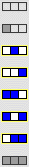
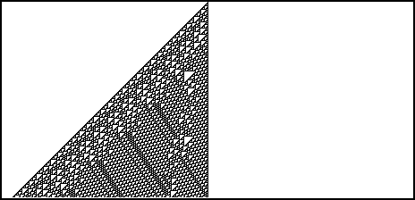
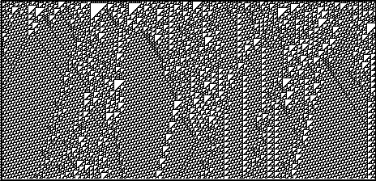

4. Cellular Automata and Fractal Evolution
Classifying Cellular Automaton Behavior
Remarkably,
Matthew Cook
proved Stephen Wolfram's conjecture that this
N = 3
CA exhibits Class IV behavior.



Return to
Classifying Cellular Automaton Behavior
.